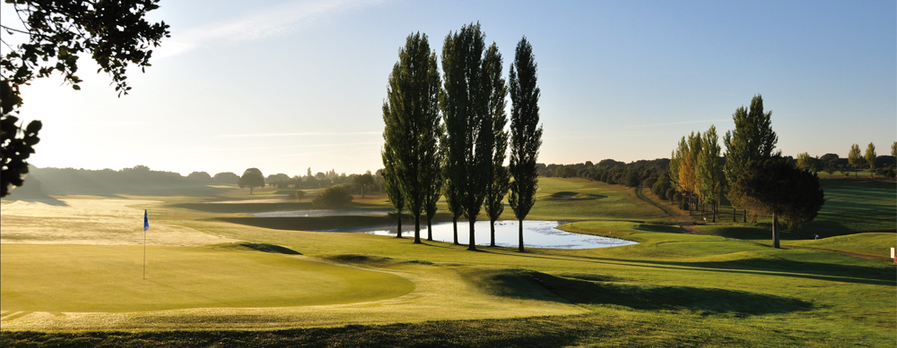
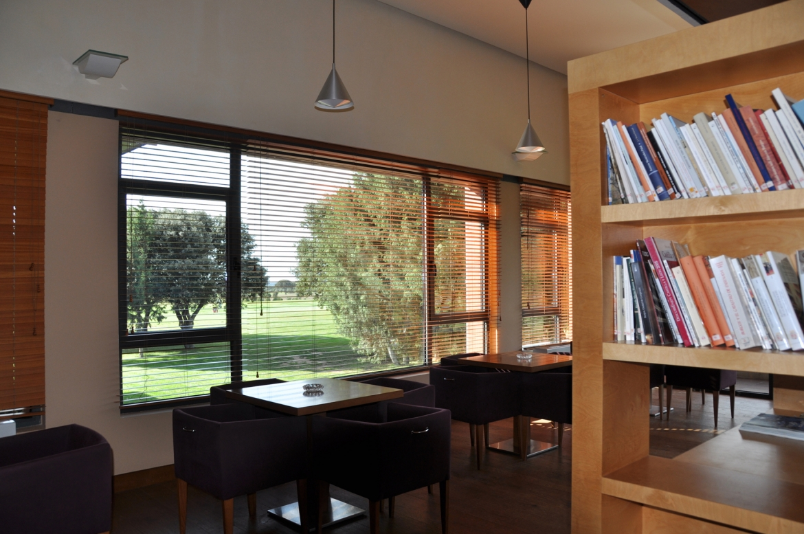
Espacio acogedor para eventos y reuniones sociales
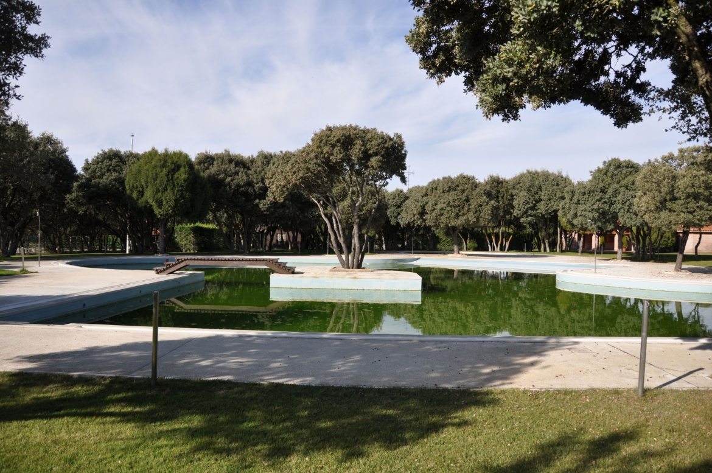
Disfruta de nuestras instalaciones acuáticas
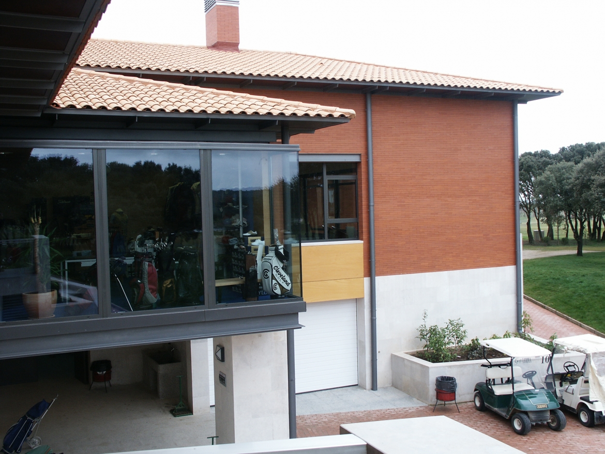
Selección de las mejores marcas de golf, equipamiento y cornershop
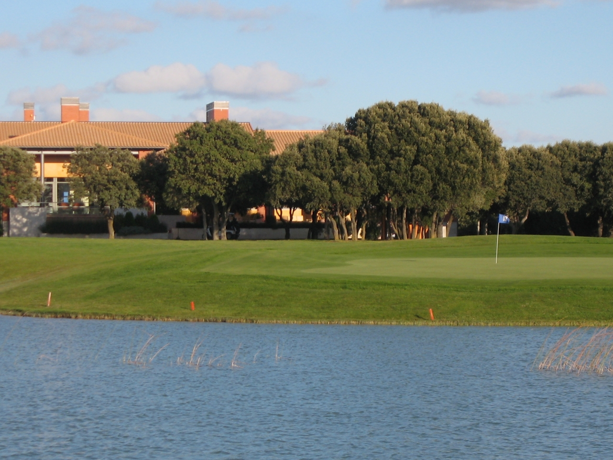
Casa club con todas las comodidades para socios y visitantes
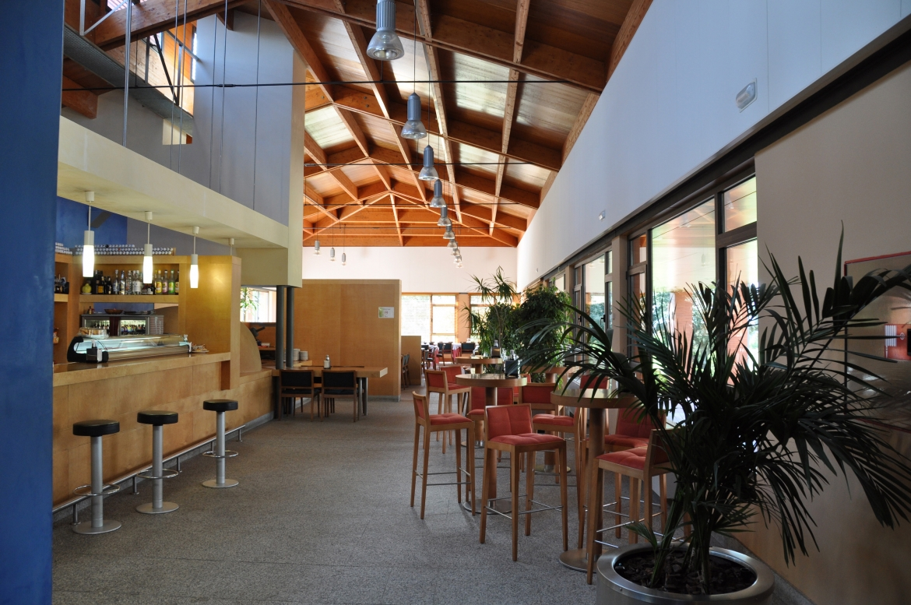
El restaurante del Campo conforma su suculenta oferta con los mejores platos de la cocina tradicional castellana, pero sin dejar por ello de lado las tendencias de la nueva cocina, primando, en todos ellos, la calidad de todos los productos que pasan por sus fogones. Junto a una carta de vinos en la que, evidentemente, los Ribera del Duero están presentes en sus mejores expresiones, el asado de cordero lechal se hace, merced a su horno de leña, monumento al paladar.
Además de este representativo manjar, el Restaurante Golf Lerma ofrece a sus clientes una amplia carta, que incluye menú del día.
Teléfono Reservas: 947 17 12 15
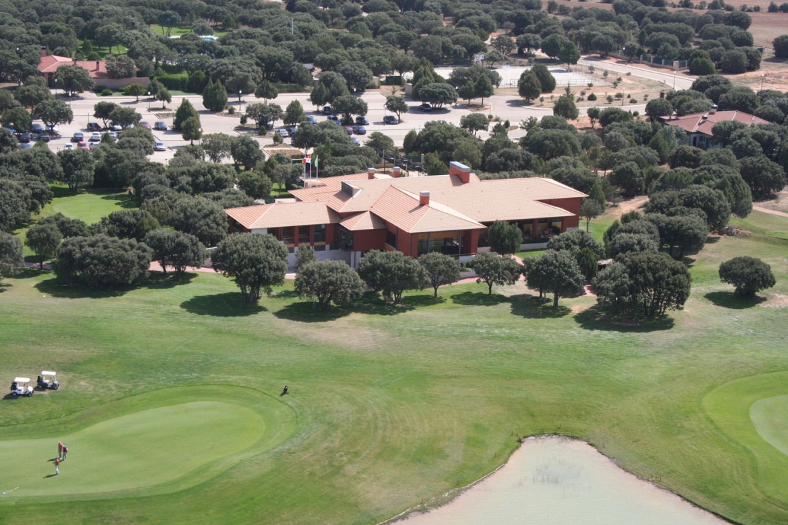
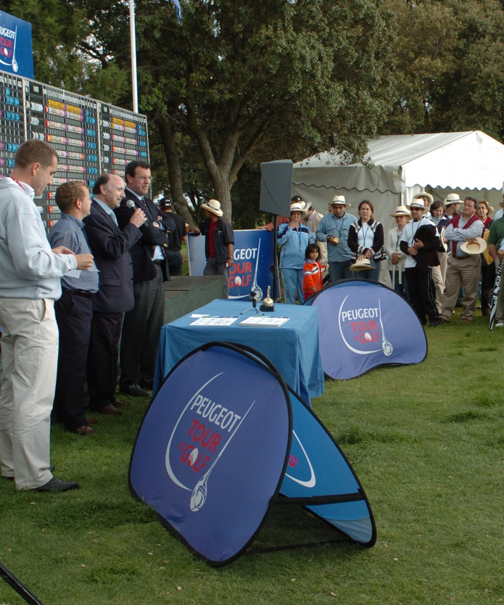
Construido en 1992 sobre una antigua finca de caza de 220 hectáreas denominada La Andaya, el campo de Golf de Lerma aúna en sus 18 hoyos la grandiosa sencillez de la naturaleza castellana y la divertida complejidad del juego del golf. Un paraje de amplios y luminosos horizontes, de orografía sobria y vegetación poderosa, fácil de andar y no tanto de negociar a la hora de agarrar los palos cuando el viento decide invitarse al juego, cosa que ocurre dos de cada tres días.
"El campo ya está hecho; lo hizo Dios", afirmó el diseñador Pepe Gancedo, proyectista del campo, cuando reconoció el terreno antes de plasmar en papel lo que hoy es una realidad.
Encinas, sabinas y robles salpican los 5.900 metros de sus calles en las que no es infrecuente ver corretear liebres o divisar el vuelo de bandadas de patos y gansos que reposan y se alimentan en alguno de los ocho lagos y dos riachuelos que jalonan el recorrido.
El campo de Golf Lerma dispone de 18 hoyos distribuidos en 5.900 metros de recorrido. Diseñado por Pepe Gancedo sobre el paraje natural de La Andaya, combina calles amplias con retos técnicos en los greenes.
Ocho lagos y dos riachuelos acompañan el juego, añadiendo emoción a varios hoyos. El viento, habitual en la meseta castellana, convierte cada partida en un desafío distinto.
Par 72 · 5.900 m · Campo de amplios horizontes con encinas, sabinas y robles.
| Tees | 1 | 2 | 3 | 4 | 5 | 6 | 7 | 8 | 9 | IDA | 10 | 11 | 12 | 13 | 14 | 15 | 16 | 17 | 18 | VTA | TOT | VC | VS |
|---|---|---|---|---|---|---|---|---|---|---|---|---|---|---|---|---|---|---|---|---|---|---|---|
| Blancas | 559 | 410 | 365 | 327 | 156 | 359 | 285 | 483 | 204 | 3148 | 498 | 398 | 202 | 382 | 342 | 190 | 383 | 530 | 305 | 3230 | 6378 | 73.5 | 138 |
| Amarillas | 518 | 377 | 335 | 309 | 138 | 343 | 277 | 436 | 170 | 2903 | 484 | 378 | 193 | 358 | 327 | 179 | 368 | 507 | 277 | 3071 | 5974 | 71.6 | 133 |
| Azules | 483 | 342 | 294 | 252 | 126 | 290 | 239 | 407 | 136 | 2569 | 437 | 342 | 166 | 310 | 302 | 147 | 338 | 470 | 257 | 2769 | 5338 | 73.2 | 137 |
| Rojas | 454 | 336 | 280 | 245 | 111 | 279 | 231 | 379 | 122 | 2437 | 419 | 320 | 161 | 298 | 285 | 121 | 330 | 448 | 237 | 2619 | 5056 | 71.6 | 134 |
| Par | 5 | 4 | 4 | 4 | 3 | 4 | 4 | 5 | 3 | 36 | 5 | 4 | 3 | 4 | 4 | 3 | 4 | 5 | 4 | 36 | 72 | ||
| Handicap | 4 | 2 | 12 | 6 | 14 | 18 | 10 | 16 | 8 | 5 | 11 | 9 | 17 | 7 | 15 | 1 | 13 | 3 |
Reglas locales permanentes y condiciones de la competición pinchar aquí.
Serán de aplicación las condiciones de la competición y las reglas locales permanentes de la R.F.E.G. AM y las siguientes:
Penalidad por infracción de regla local: Match Play – Pérdida de hoyo. Stroke Play – Dos golpes.
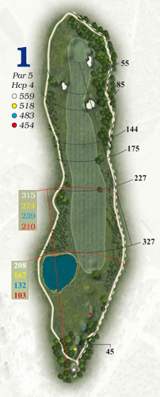
Para comenzar el recorrido nos enfrentamos a un hoyo tranquilo, en el cual debemos evitar el agua de la izquierda de la calle para tener mejor entrada a green. Existe fuera de límites por la derecha, eso sí, bastante alejado.
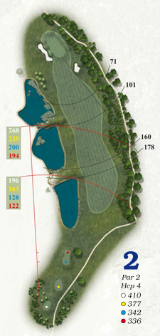
En el tee nos encontramos con agua a la izquierda. Los jugadores con handicap alto deberán jugar por la derecha en salida. Los que posean handicap bajo podrán sobrevolar el primer lago. Es recomendable apoyar tiro a green por la derecha.
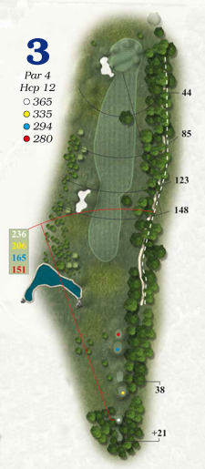
Importante no fallar a la salida por la derecha. Nos encontraremos con un green complicado, estructurado en dos plataformas y protegido por un bunker a la izquierda.
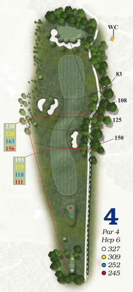
Para evitar problemas, apoyar el golpe de salida a la izquierda. Los pegadores deben intentar sobrevolar el bunker derecho. Encontarán un green en alto, rodeado por un gran bunker. Cuidado con pasarse de green en el aproach.
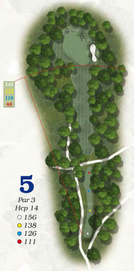
Este par tres nos recibirá con un green muy grande, aunque tiene, claro, su pero. La dificultad para llegar a él reside en que la línea de la calle se encuentra totalmente rodeada de árboles.
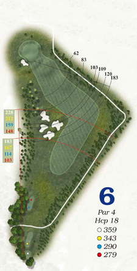
Este hoyo, de par cuatro, presenta en su amplia calle un ligero dog-leg hacia la izquierda. Conviene apoyar hacia este lado el golpe de salida. A la hora de negociar el segundo golpe debemos tener en cuenta que el green se encuentra cuesta abajo.
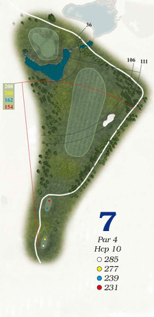
Par cuatro con obstáculo de agua. Excepto osados, el golpe de salida debería jugarse corto y por la derecha, incluso con un hierro, para no encontrarnos la bola en el lago. La bandera se nos ofrece en un green con dos plataformas.
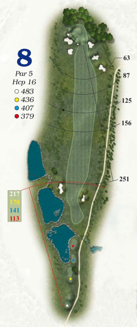
Hoyo de recuperación, de par cinco, en el que los pegadores pueden alcanzar el green en dos golpes. Al llegar al green nos encontraremos que éste se encuentra fuertemente protegido por bunkers.
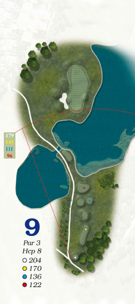
Para terminar la primera vuelta, impresionante par tres, cuyo green se encuentra protegido, tanto por la derecha como por delante, por un lago. Tras sobrevolar el agua la bola será recibida en un green de 50 metros, con tres plataformas y bunker a la izquierda.
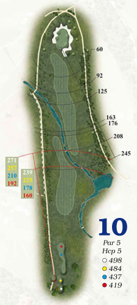
Sólo con viento a favor, amén de un buen brazo, se consigue sobrevolar el agua en el golpe de salida. Conviene colocar el segundo golpe a la izquierda de la calle. El green, muy definido, se protege con un gran bunker que lo rodea.
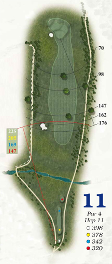
Tres sabinas centenarias dividen la calle de este par cuatro haciendo que en el golpe de salida debamos elegir jugar a un lado u otro de estos árboles. El green, con tres plataformas, nos espera en alto.
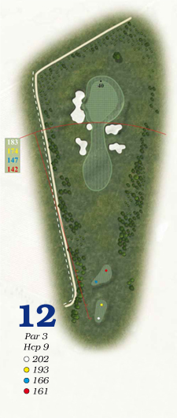
Largo par tres en el que, desde el tee situado en alto, divisamos fácilmente la bandera en línea recta. Con el primer golpe debemos alcanzar su enorme green, que se encuentra defendido por bunkers a izquierda y derecha.
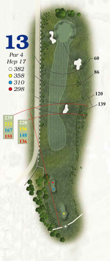
Este par cuatro presenta un ajustado fuera de límites a la izquierda de la calle y un gran bunker ubicado a la derecha de la misma que los buenos pegadores pueden sobrepasar sin complicaciones en su golpe de salida. El green, amplio y protegido por un bunker a la izquierda, no ofrece complicaciones.
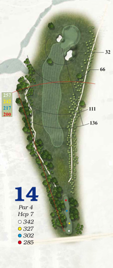
Si queremos evitar el rough, debemos apoyar el golpe de salida hacia la izquierda de la calle. Solventado el primer golpe, nos encontraremos un green en alto, distribuido en dos plataformas y defendido con bunkers a ambos lados.
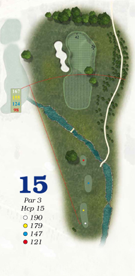
El green del último par tres al que nos enfrentaremos en el recorrido está defendido por un bunker a la izquierda y un bello y antiguo ejemplar de sabina en el borde derecho. Conviene apoyar el golpe de salida a la derecha para evitar encuentros con la arena.
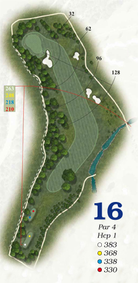
Probablemente sea éste el hoyo más complicado del campo. ¿Que por qué?: Dog-Leg hacia la izquierda y un espeso bosque por ese lado que hacen que la salida deba ser conservadora hacia la derecha. El Handicap alto debería jugarlo como par cinco por la derecha. El Handicap bajo puede acortar por encima de los árboles. Green sin complicaciones, protegido por un bunker corto con gran talud.
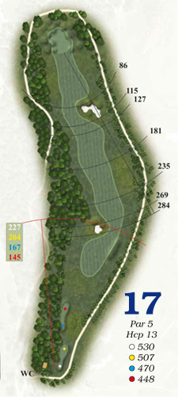
Es un hoyo muy largo, de par cinco, que debemos jugar por la derecha si queremos evitar obstáculos. Los pegadores pueden acortar por encima de los bunkers que se entrometen en el discurrir de la calle tanto en el primer golpe, bunker a la izquierda, como en el segundo golpe, bunker a la derecha. Como recompensa, el green nos recibirá sin sorpresas de arena.
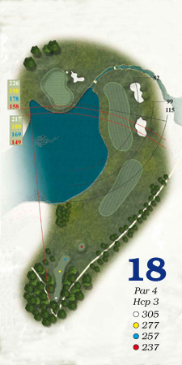
Emocionante hoyo para acabar el recorrido, en el que el jugador debe elegir entre ser conservador, la mejor elección para un handicap alto, y jugar a la calle por la derecha o tirar directo al green en la salida. Los valientes que opten por la segunda opción deben sobrevolar un gran lago. Se puede hacer hoyo en uno o arruinar una vuelta. Esa es la cuestión. El último green nos recibirá con pequeñas caídas.